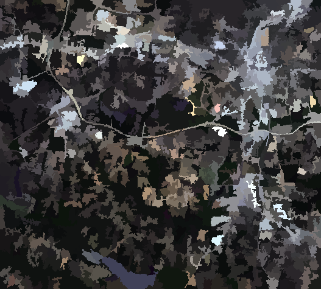
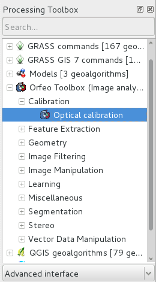

Inicio Rápido de OTB¶
La biblioteca ORFEO Toolbox (OTB) es una biblioteca de alto rendimiento para el procesamiento de imágenes dirigida a la teledetección.
Esta Guía de Inicio Rápido describe cómo:
- Obtener información de metadatos de una imagen
- Realizar operaciones matemáticas entre bandas de imágenes.
- Abra imágenes ráster con la aplicación monteverdi, realice la segmentación (agrupación de desplazamiento medio) y visualice el resultado
- Realizar una clasificación supervisada basada en el algoritmo de Máquina de Vectores de Soporte
Las aplicaciones OTB proporcionan muchas herramientas interesantes que facilitan la manipulación de imágenes. Todas estas herramientas están disponibles a través de:
- CLI (interfaz de línea de comandos). Todas las aplicaciones se pueden llamar desde un terminal a partir de otbcli_ más el nombre de la aplicación.
- GUI (una interfaz gráfica de usuario independiente en Qt). Las aplicaciones se pueden llamar desde un terminal con el alias otbgui_ más el nombre de la aplicación. Otra opción es utilizar un lanzador pequeño (disponible en ).
- Complemento QGIS - disponible a través del marco de procesamiento.
- Los datos de muestra utilizados en este inicio rápido se pueden encontrar en:
- /inicio/usuario/datos/north_carolina/rast_geotiffs
Contents
Mostrar información de metadatos en una imagen¶
Puede obtener toda la información de metadatos contenida en una imagen con el comando : otbcli_ReadImageInfo El parámetro único es el nombre del archivo de imagen de entrada, por ejemplo:
otbcli_ReadImageInfo -in ortho_2001_t792_1m.tif
Calculadora en bandas de imágenes¶
El otbcli_otbBandMath proporciona una manera eficiente de realizar operaciones matemáticas en bandas de imagen. La sintaxis es bastante simple. Por ejemplo, para envasar dos bandas para estudiar las diferencias de imagen en las imágenes lsat7_2002_10.tif and lsat7_2002_20.tif, solo tiene que utilizar el comando:
otbcli_BandMath -il lsat7_2002_10.tif lsat7_2002_20.tif -out difference.tif -exp "im1b1-im2b1"
La aplicación es capaz de realizar operaciones matemáticas complejas sobre imágenes (límite, reescalado logarítmico, etc.). Esta calculadora digital casera también se incluye con funciones personalizadas que le permiten calcular una expresión completa. Por ejemplo, a medida que las imágenes de teledetección miden valores físicos, es posible extraer varios índices con significado físico como el NDVI (Índice de Vegetación de Diferencia Normalizada) para la vegetación. Con la calculadora puedes calcular el NDVI en imágenes de sensores multiespectrales haciendo:
otbcli_BandMath -il lsat7_2002_30.tif lsat7_2002_40.tif -out ~/ndvi.tif -exp "ndvi(im1b1,im2b1)"
El archivo lsat7_2002_30.tif corresponde al canal rojo Landsat 7, lsat7_2002_40.tif corresponde con Infra-Rojo Cercano.
Luego puede visualizar las imágenes de entrada y el resultado con el comando
monteverdi lsat7_2002_30.tif lsat7_2002_40.tif ~/ndvi.tif
Clasificación basada en píxeles¶
La clasificación en el marco de la aplicación proporciona una cadena de clasificación supervisada en píxeles basada en el aprendizaje de múltiples imágenes y utilizando un método de aprendizaje automático específico como SVM, Bayes, KNN, Random Forests, Artificial Neural Network y otros. Consulte la ayuda de la aplicación TrainImagesClassifier para obtener más detalles sobre todos los clasificadores disponibles. Es compatible con imágenes enormes a través de streaming y multi-threading. La cadena de clasificación realiza un paso de entrenamiento basado en las intensidades de cada píxel como entidades. Tenga en cuenta que todas las imágenes de entrada deben tener el mismo número de bandas para ser comparables.
Para descubrir esta aplicación, puede usar el comando
otbgui_TrainImagesClassifier
Realizar segmentación¶
La aplicación OTB Segmentation permite producir una salida de segmentación ráster con diferentes algoritmos y escalar a un ráster grande produciendo salidas vectoriales que puede importar en un software SIG. Hay cuatro métodos de segmentación disponibles en la aplicación:
- Cambio-Medio
- Cuenca hidrográfica (implementación de ITK)
- Componentes-Conectados
- Perfiles morfológicos
Puede probar la segmentación con estos comandos:
- Creación de una imagen multicanal Rojo-Verde-Azul-Nir
otbcli_ConcatenateImages -il lsat7_2002_30.tif lsat7_2002_20.tif lsat7_2002_10.tif lsat7_2002_40.tif -out ~/lsat7_rgbn.tif
- Aplicar segmentación
otbcli_Segmentation -in ~/lsat7_rgbn.tif -filter meanshift -mode raster -mode.raster.out ~/segmentation.tif
- Generar colores en lugar de etiquetas.
otbcli_ColorMapping -in ~/segmentation.tif -out ~/segmentation_colored.tif -method image -method.image.in ~/lsat7_rgbn.tif
Además, la aplicación puede funcionar en dos modos diferentes:
Modo ráster: le permite segmentar una imagen pequeña y produce un ráster donde cada componente de la segmentación está etiquetado con un entero único
Modo vectorial: segmente imágenes más grandes y genere un archivo vectorial donde cada segmento de la segmentación esté representado por un polígono

OTB también incluye un marco para realizar la segmentación en mosaico de imágenes muy grandes con garantías teóricas de obtener resultados idénticos a aquellos sin mosaico llamado LSMS.
OTB en QGis¶
El mismo conjunto de aplicaciones OTB también se puede utilizar desde el menú en QGis. Las aplicaciones se ordenan por etiqueta.

Desarrollando con OTB¶
Si desea utilizar la biblioteca OTB y compilar su código C++ dentro de OSGeoLive, tendrá que:
- Instale el paquete de desarrollo libotb-dev y libqt4-dev .
- Compruebe que cmake esté instalado.
La ubicación OTB_DIR debe encontrarse automáticamente (normalmente en /usr/lib/x86_64-linux-gnu/cmake/OTB-…). En la configuración de CMake, debe vincular las bibliotecas en la variable OTB_LIBRARIES.
Puede encontrar más información en la Guía de software.
¿Qué sigue?¶
Guía del Software OTB
La principal fuente de información es la Guía de software OTB. Esta es una guía completa que comprende aproximadamente 600 páginas, que detalla los pasos para instalar OTB y usarlo. La mayoría de las clases disponibles se ilustran en gran medida con los resultados del procesamiento de detección remota real.
OTB CookBook
También está disponible una guía para aplicaciones OTB y Monteverdi dedicada a los no desarrolladores. Esta guía se compone de un breve recorrido por las aplicaciones OTB y Monteverdi, seguido de un conjunto de recetas para realizar las tareas habituales de detección remota con ambas herramientas.
Tutoriales de OTB
Siga los tutoriales para obtener más información sobre OTB.
Documentación de Aplicaciones OTB
Consulte también la documentación detallada sobre las aplicaciones OTB
Cursos OTB con imágenes de Pleiades para aprender a usar aplicaciones OTB y Monteverdi
Siga los cursos para obtener más información sobre OTB (consulte la sección Tutoriales).